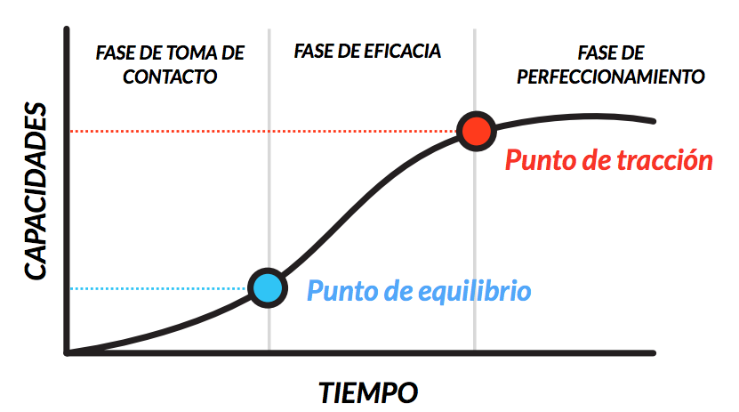

Como empezar de cero en Python: Torciendo la curva de aprendizaje
Me presento...
Horacio F. Mayo
Humahuaca - Jujuy - Argentina
Cátedra de Agroclimatología - FCA-UNJu
Cátedra de Informatica - FCA-UNJu
Contacto: @HoracioNakama (Twitter, Instagram, Telegram)
Advertencia
Permitido interrumpir para aportar o preguntar. Es aburrido solo escuchar... y solo hablar.
Antes de empezar
Instalaremos Anaconda
- Windows: Ejecutar el archivo exe e instalarlo en C:\Anaconda3
- Ubuntu:
:~$ bash Anaconda3-4.2.0-Linux-x86_64.shInicio
Mi curva en 2015

¿Qué Python utilizar? 2.x? 3.x?
IMPORTANTE: por tutoriales, por comunidad, etc.
Truco: Print. En python 3.x es una función.
Print ("Hola Mundo")
¿Dónde aprendo Python?
PyConAr 2014 Rafaela - Introducción a Python - Facundo Batista
PyConAr 2015 Mendoza - Python para iniciantes - Fernando Masanori
PyConEs 2014 Zaragoza - Clases en Python Lo estas haciendo mal - Victor Terrón
Instalar Python
Instalar Python
- Windows: Ejecutable descargado de www.python.org/downloads/
- Linux:
:~$ sudo apt-get install python :~$ sudo apt-get install python3- Ubuntu 14.04 - Python 2.7 (x defecto)
- Ubuntu 16.04 - Python 3 (x defecto)
Debian 7 el sudo instala Python 3.2
Recomendación: En Linux bajarse el tar.gz de Python
CUIDADO!! SIG Usan Python 2.7(Qgis, Arcgis, etc.)
Distribuciones de Python
- Anaconda y Miniconda (Recomendado para iniciar)
- PythonXY
- Para Científicos
- WinPython (Windows 7/8/10.
- Portable o no
- Spyder, Jupyter/Ipython o IDLE
- Más información
Librerias y Entornos Virtuales
Instalar Librerias
PIP
- LINUX
~$ sudo apt-get install python-pip python-dev build essential
~$ sudo pip install numpy- WINDOWS
pip install numpyCONDA (ANACONDA)
- WINDOWS O LINUX
:~$ conda search numpy
:~$ conda install numpy=1.9.2Entornos Virtuales
Opcion 1: VirtualEnv
- Instalación (LINUX)
:~$ sudo apt-get install virtualenv python-virtualenv :~$ sudo pip install virtualenv - Ejecutar: Se crea carpeta "mi entorno" y subcarpetas "bin, include, lib"
- Activar:
Entro a la carpeta "entornovirtual"
:~$ source bin/activate (nombreentorno):~$ - Instalar paquetes:
- Desactivar:
:~$ virtualenv nombreentorno(nombreentorno):~$ pip install numpy(nombreentorno):~$ deactivateOPCION 2
- Conda (Anaconda)
:~$ conda create -n mientornovirtual python=x.x
:~$ source activate mientornovirtual
:~$ source deactivate
:~$ conda info --envsVAMOS A LA PRACTICA!!
EMPECEMOS A UTILIZAR PYTHON
¿Donde escribir codigo Python?
IDE vs Editores vs Notebook Jupyter
IDE
- PyCharm
- Python IDE for Professional Developers
- www.jetbrains.com/pycharm/
- Community y Professional
- Ninja-IDE v2.3
- Ninja-ide Is Not Just Another IDE
- Centro de Software de Ubuntu
- http://ninja-ide.org/
- Spyder
- The Scientific PYthon Development EnviRonment
- https://github.com/spyder-ide
Editores de Texto
- Sublime Text
- Vim Vim Awesome
- Emacs
Notebook Jupyter
Try Jupyter (try.jupyter.org)
Try Jupyter (Chrome) (tmpnb.org)
Probemos los IDEs y Editores
¿Donde encuentro más Python?
Listas de Correo
- Python Argentina (www.python.org.ar/lista/)
- Python España lists.es.python.org/listinfo/general
- Python Paraguay (groups.google.com/forum/#!forum/python-paraguay)
- Python Bolivia lists.riseup.net/www/subscribe/pythonbolivia
- SciPy Latina America (groups.google.com/forum/#!forum/scipyla)
Grupos Telegram
- PyconAr 2016 Bahia Blanca(telegram.me/pyconar16)
- Python Argentina (telegram.me/pythonargentina)
- Python España @PythonEsp (telegram.me/PythonEsp)
- Scipy Latin America @scipyla (telegram.me/scipyla)
- Scipy Sampa @ScipySP (telegram.me/ScipySP)
Websites
- Pybonacci - Python y Ciencia pybonacci.org/
- Python Argentina www.python.org.ar
- Python www.python.org